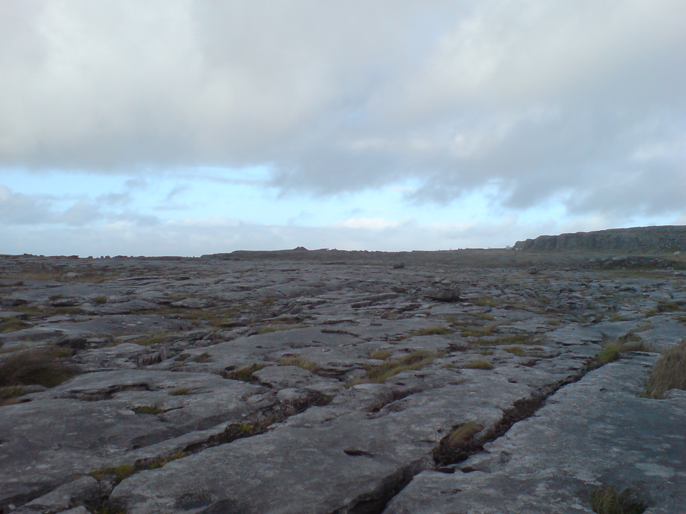

आयरलैंड में देखने के लिए मेरी पसंदीदा जगहें
आयरलैंड में देखने के लिए बहुत सारे स्थान हैं। यहाँ एक छोटा की सूची है!
मोहर की चट्टानें
मोहर की चट्टानें काउंटी क्लेयर में पाई जाती हैं, जहां से मैं हूं। वे देखने के लायक हैं - वे कितने अद्भुत हैं!

द बूरेन
बूरेन क्लेयर काउंटी और गॉलवे में असामान्य चूना पत्थर संरचनाओं में शामिल एक क्षेत्र है। यह आगे बढ़ रहे ग्लेशियर द्वारा निर्मित था, जिसने नर्म चट्टान में रस्ते खोद दिए थे। आप मीलों तक पत्थर के फुटपाथ पर चल सकते हैं: बड़े समतल चट्टानें गहरी दरारें से अलग हो जाती हैं।
बुरेन की अलग जलवायु के कारण इसकी अपनी विशेष वन्यजीव और वनस्पति है आयरलैंड के बाकी हिस्सों से अलग है। आप वहाँ के ग्रामीण इलाकों में फूलों को देख सकते हैं जो आयरलैंड में और कहीं विकसित नहीं होते। आपको उन्हें चुनना नहीं चाहिए, क्योंकि परिदृश्य संरक्षित है।

अकिल द्वीप
यह मेयो काउंटी के तट पर एक बड़ा द्वीप है। इसमें पहाड़ों, दलदल और चट्टानों का एक जंगली और सुंदर परिदृश्य है।

फोटा वाइल्डलाइफ पार्क
कॉर्क काउंटी में फोटा द्वीप एक वन्यजीव संरक्षण पार्क
यह एक अलग प्रकार के चिड़ियाघर की तरह है। आप जिराफ के खेतों से जाने वाले रास्तों पर चलते हैं, पेंगुइन के झुंड से गुजरते हुए एक लेमर को पास के पेड़ से लटकते हुए देख सकते हैं।
न्यूग्रेंज
न्यूग्रेंज अपने मार्ग समाधि के लिए प्रसिद्ध है। एक संकीर्ण सुरंग मानव निर्मित पहाड़ी के केंद्र की ओर जाती है। किसी महत्वपूर्ण व्यक्ति को हजारों साल पहले वहां दफनाया गया था और लोगों ने उन्हें के लिए कब्र बनायीं थी। छत और दीवारों पूरी तरह से चट्टान के समतल टुकड़ों को एक दूसरे के ऊपर पर रख कर बनी है। हर साल एक सुबह, विंटर सोलस्टाइस में, उगते हुए सूरज मध्य में चैम्बर तक सभी तरह से रोशनी डालते हैं।
डबलिन में घूमने की जगहें
डबलिन आयरलैंड की राजधानी है। यहाँ देखने के लिए कुछ चीजें हैं:
- डबलिन चिड़ियाघर
- मोम का संग्रहालय
- एपिक आयरलैंड